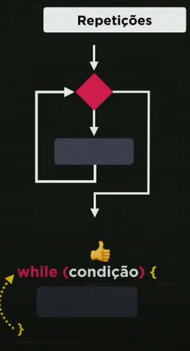
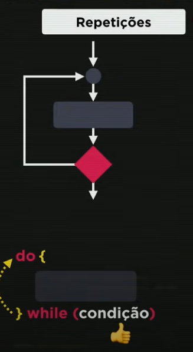
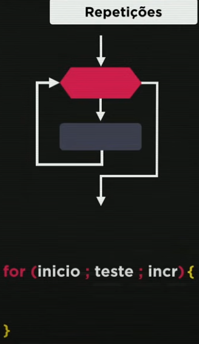

As estruturas de repetições servem para repetir um bloco de código enquanto uma condição for verdadeira.
Essa é a estrutura básica de um laço "while":
var c = 1;
while (c <= 6){
console.log(`${c}º Olá`);
c++;
}'

A principal característica do while é que o teste lógico é feito no início da estrutura, validando se a condição é ou não verdadeira, ao contrário do "do while" que executa o bloco pelo menos uma vez antes de verificar se a condição é verdadeira
Essa é a estrutura básica do "do while":
var d = 1;
do {
console.log(`${d}º Olá`);
d++;
}while (d <= 6);

O "do while" é útil quando você precisa garantir que o bloco de código seja executado pelo menos uma vez, independentemente da condição inicial.
Ambas as estruturas são úteis para iterar sobre sequências, mas a escolha entre elas depende do comportamento desejado. Se você precisa que o código seja executado pelo menos uma vez, use "do while". Se a condição deve ser verificada antes da execução, use "while".
Essa é a estrutura básica do "for":
for (var e = 1; e <= 6; e++){
console.log(`${e}º Olá`);
}

O "for" tem 3 partes, o inicio, o teste e o incremento, seguido do bloco que contém as instruções que serão realizadas.